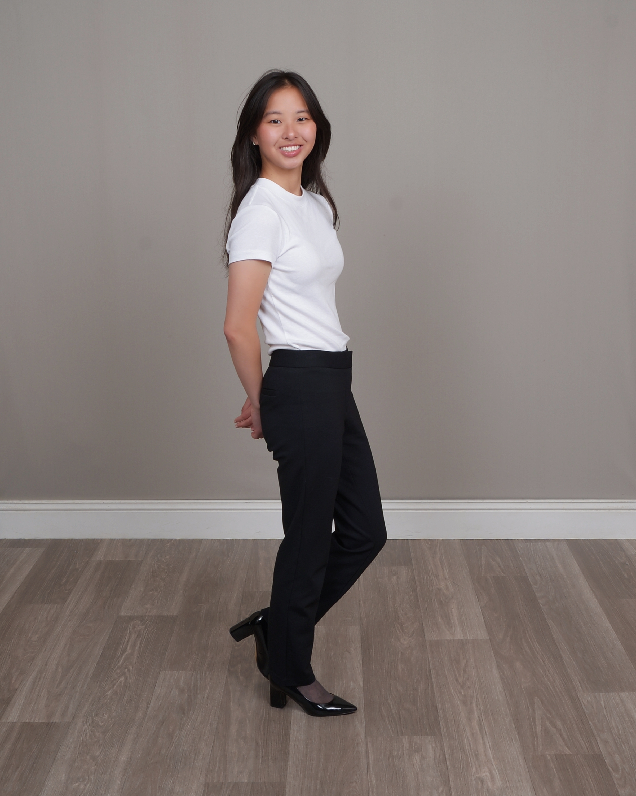

Open to internships & opportunities
Hi, I'm Andrea Yandell
a first year CS student
& photographer
Computer Science student at the University of Washington, seeking to explore the intersections of technological advancements and human creativity.

00 — About
A bit about me
Hey there! I'm Andrea, a CS major at the UW Allen School. I've always been fascinated by technology and capacity to transform the human experience. My interests currently are in Data Science, AI, and Machine Learning, but I'm eager to explore many aspects of computer science!
Outside of classroom, I pursue non-technical interests such as photography and working out. A couple of my favorite things to photograph are birds and macro-shots of flowers. In addition, I love trying new foods and exploring other culture's cuisines.
01 — Skills
Tools & Technologies
Software
Concepts & Libraries
02 — Projects
To be continued...
01
Micromobility Trends in Seattle
CSE 163 Final Project: Analysis of micromobility (i.e. e-scooters and e-bikes) vehicle collisions data in Seattle, studying correlations to vehicle availability and bike lane access. I focused on normalizing vehicle geo-json data to geographic coordinates (lat/long) and correlating available vehicle locations to accident reports. I also conducted statistical tests for data significance and plotted results using matplotlib. Group shared findings with class through 16-page writeup and video presentation.
03 — Experience
Where I've Been
-
Crew Member
Woodinville McDonald's
- Fully cross-trained front and back of house with significant experience training new employees.
- Maintained strong performance under pressure, serving dozens of customers an hour.
- Ensured compliance with health and restaurant standards.
-
Tutor
King County Libary System StudyZone
Tutored dozens of elementary school students through weekly Zoom calls. Developed strong communication skills and teaching abilities.
04 — Photography
Highlights

Posing Hummingbird
Close up shot of Anna's Hummingbird posing Lilac bush.

Floral Detail
Macro photography highlighting texture and light of a Clamatis blossom

Perspectives
A unique perspective on a common flower in grass.
05 — Contact
Let's build
Let's build
the future.
I'm open to internships, learning opportunities and collaborations. Feel free to reach out via email or connect with me on LinkedIn.
andreaey@uw.edu